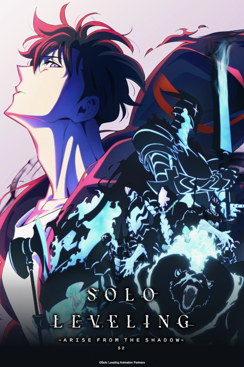
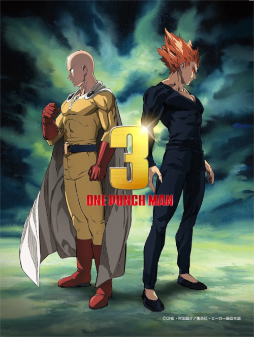
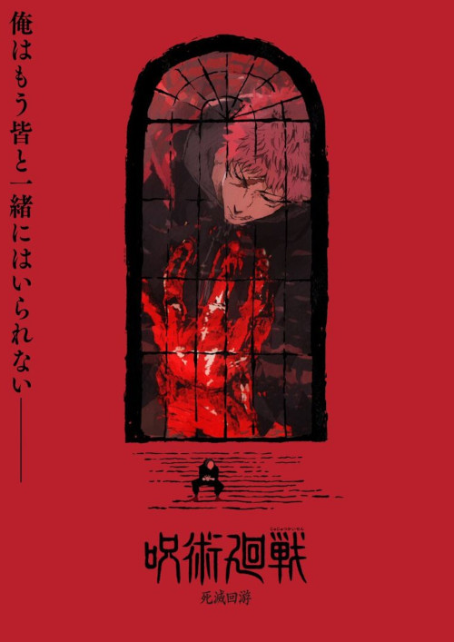
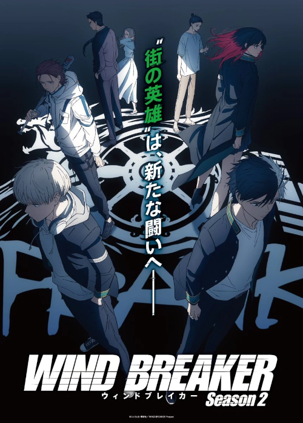
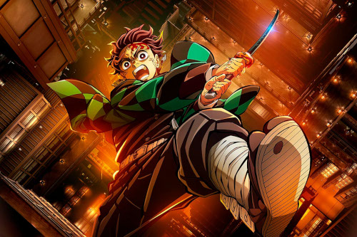
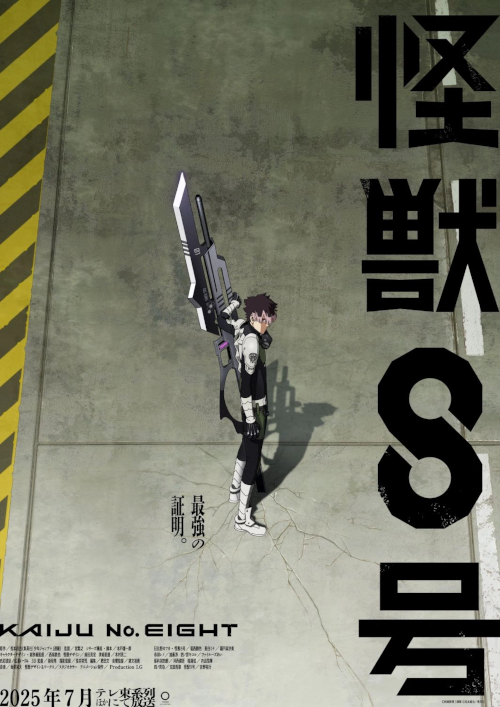
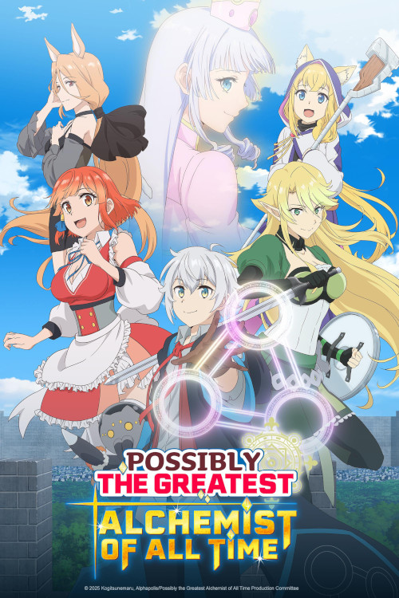

-
1° Solo Leveling (2° temporada)
Se há algo que ficou claro na primeira temporada de Solo Leveling, além de uma profunda escuridão, é que mal arranhamos a superfície com os eventos da primeira temporada. Desde as primeiras prévias, a descida de Sung Jin-woo ao inferno será cada vez maior, assim como os inimigos. Política, perversão e muitos demônios farão parte da segunda temporada, que já foi anunciada para 2025.
-
2° One-Punch Man (3° temporada)
E se você curte personagens overpower como o Gojo, de Jujutsu, 2025 será o seu ano. One-Punch Man retornará finalmente com a sua aguardadíssima terceira temporada, com Saitama e Garou em um confronto feroz. One-Punch Man é inspirado no mangá de One, que ganhou adaptação em anime a partir de 2015. Na trama, acompanhamos Saitama, um super-herói com o poder de derrotar qualquer inimigo com um único soco — o que, é claro, faz com que ele fique um pouco entediado.
-
3° Jujutsu Kaisen (3° temporada)
O arco de Shibuya, abordado na segunda temporada de Jujutsu Kaisen, entregou o que as expectativas pediam. O trecho, que é apontado por boa parte dos fãs como o mais empolgante do mangá, dará lugar ao Jogo da Migração. A nova saga aprofunda de vez a parte "mecânica” de Jujutsu, com habilidades cada vez mais inventivas e complicadas de se entender. O queridíssimo Hakari finalmente fará sua estreia, e Maki Zenin terá seu grande momento de brilhar.
-
4° Wind Breaker (2° temporada)
Se já houve um grupo de amigos queridos que misturou a violência e as gangues de Tokyo Revengers com a fraternidade e o companheirismo de Haikyuu!! Essa série é Wind Braker. Em apenas alguns episódios, ele conquistou centenas de milhares de fãs em todo o mundo, e o que está por vir é promissor. As gangues terão que enfrentar um conflito inimaginável para defender sua cidade e sua cidade, mas, acima de tudo, sua amizade. Será que Haruka Sakura se tornará um líder positivo, será que ele aprenderá a entender o valioso poder da amizade, e nós só queremos ver mais dele e de sua turma.
-
5° Demon Slayer: Arco do Castelo Infinito (1º filme)
Após uma temporada morna, Demon Slayer deve voltar com o suco da porradaria no primeiro de três filmes que encerrarão a jornada de Tanjiro e Nezuko. Considerando o desenrolar da quarta temporada, e que restam pouco mais de 60 capítulos de mangá para serem abordados no anime, é bem provável que algumas sequências sejam esticadas para preencher espaço — o que até poderia ser visto como algo negativo, mas ter mais minutos de animação da Ufotable na tela é sempre um deleite.
-
6° Kaiju No. 8 (2° temporada)
Foi uma das surpresas mais agradáveis de 2024 e já está se preparando para retornar em 2025. Com o palco montado e todos os personagens apresentados, Kafka Hibino agora terá que provar que sua força de vontade e habilidades adquiridas são dignas de enfrentar o mal que está por vir. Grandes batalhas estão chegando! E ainda não conhecemos todas as possíveis ameaças. Um dos mais esperados de 2025.
-
7° Possibly the Greatest Alchemist of All Time
A história acompanha Takumi Iruma, um homem assalariado que acaba sendo invocado por acidente para outro mundo como parte do grupo de heróis que deveria salvar a humanidade. Como compensação pelo seu erro, a Deusa daquele outro universo oferece a Takumi a oportunidade de escolher qualquer habilidade que queria. Em nome de manter uma vida tranquila e longe das batalhas, Takumi escolhe a habilidade “alquimia”, sem saber que faria com que aquela habilidade se tornasse uma das mais poderosas daquele mundo. Agora com a capacidade de criar qualquer coisa que imaginar, desde espadas sagradas a navios voadores, Takumi tentará viver em paz naquele novo mundo, mesmo que acaba se envolvendo em problemas ocasionalmente.